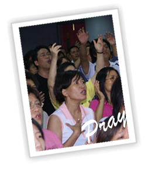

禱告會的突破
真道聖經學院教務主任 楊謀元 牧師

過去再和平堂每週参與「週五禱告會」的人數約為100-120人(大人、小孩)左右。會中固定為國家教會守望禱告，背誦每週聖經經句，讓信徒充滿神的話；
奉獻、信息分享、追求聖靈充滿、詩歌敬拜、禱告醫治、委身主生命更新，而得著價值觀與生命的改變。每每看到聖靈運行，以及弟兄姐妹的渴慕，就非常感動，
向神獻上感恩。讓人經歷神的大能作為﹝神蹟、奇事、異能、病得醫治、生命得改變﹞，是每次禱告會的訴求重點
2009年七月我們遷入新西門會堂，八月份禱告會聚會人數馬上突破到140-150人，一方面是交通比和平堂方便，一方面更是神的帶領。我們更計畫能下樓去把街上有心靈或肉體疾病的帶上來禱告，傳福音給他們，使他們經歷耶穌的拯救與聖靈的大能。
建立無牆的禱告會，使週五禱告會不僅有為國家、教會守望禱告，追求聖靈充滿、生命更新；更有為教外人打開一扇們、一扇窗，使他們也有機會經歷神大能，成為神的兒女。
期待禱告會展開嶄新輝煌的一頁！
|